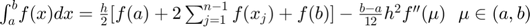
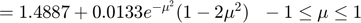

Práctica 4: Convolución y Correlación de señales
Error using dbstatus Error: File: C:\Users\kaleb\Documents\MATLAB\Prácticas_Señales\P04\ASySPrac4KalebVillagomez.m Line: 219 Column: 1 Function definitions in a script must appear at the end of the file. Move all statements after the "convconm" function definition to before the first local function definition.
Contents
Integrantes
- Alejandro Enrique Lopez Ahumada
- Alvaro Catalán Escobar
- Carlos Enrique Mejía López
- Kaleb Villagómez Galván
Objetivos
- Conocer métodos básicos de integración numérica
- Manipulación de instrucciones en MATLAB
- Simular convoluciones y correlaciones de señales continuas
- Simular convoluciones y correlaciones de señales discretas
Introducción
Métodos numéricos
Como introducción se muestra un breve reporte acerca de los métodos numéricos expuestos en la lista de reproducción adjuntada en el documento de la práctica 4.
Fórmulas cerradas de puntos de Newton-Cotes.
En este método se utilizan los polinomios de interpolación de Lagrange:
Lo que se logra con esto es que, en lugar de integrar la función , se integran los polinomios del lado derecho de la igualdad, siendo estos más manejables al momento de utilizar resultados del cálculo diferencial e integral. La indica el grado del polinomio y el indica la cantidad de puntos que se necesitan para armar el polinomio respectivo, es decir, para un polinomio de grado se requieren puntos, para uno de grado se requieren 3 puntos, etc. Para encontrar dicho polinomio se utiliza la siguiente fórmula:
(paso)
De esta fórmula se derivan las siguientes reglas para determinar polinomios de grado respectivamente.
- Regla del trapecio
![$\int_{x_0}^{x_1}\!f(x)dx=\frac{h}{2}[f(x_0)+f(x_1)]-\frac{h^3}{12}f^{\prime\prime}(\xi) \:\;\: x_0 \leq \xi \leq x_1$](ASySPrac4KalebVillagomez_eq18082663308108409964.png)
- Regla de Simpson
- Regla de tres octavos de Simpson
Ejemplo utilizando el método de fórmula cerrada de Newton-Cotes con la regla del trapecio:
Fórmulas cerradas de Newton-Cotes compuestas.
La idea de este método se basa en subdivir un intervalo en subintervalos, de tal modo que el area bajo la curva se pueda aproximar por una cantidad de trapecios y no únicamente por uno sólo, esto es:
- Regla compuesta del trapecio

- Regla compuesta de Simpson
Donde:
(número de subintervalos)
(paso)
Ejemplo utilizando el método de fórmula cerrada de Newton-Cotes con la regla compuesta del trapecio:

Cuadratura Gaussiana
La Cuadratura Gaussiana es un esquema que permite integrar una función analítica sin utilizar ningún paso. Se parte de un esquema de la siguiente forma:

Este esquema implica que se deben elegirse parámetros para resolver la integral; estos parámetros representan un polinomio de grado máximo .
Para este método se utilizan los polinomios de Legendre para aproximar integrales de funciones, de tal manera que tanto las constantes como los puntos de evaluación satisfagan un cierto grado de precisión.
Ejemplo:

Sección 1
Queremos realizar la convolucion de las siguientes señales


Se puede implementar las graficas en MATLAB con el siguiente codigo :
subplot(3,3,1) syms t x=piecewise(t<0,0,0<t<1,exp(-t).*heaviside(t),t>1,0); fplot(x,[-2,2],'r') grid on title('x(t)') axis([-1 3.6 -2 2]); subplot(3,3,3) h=piecewise(t<-1,0,-1<t<1,t,t>1,0); fplot(h,[-2.1,2.1],'r') grid on title('h(t)') axis([-2 2 -2 2]); t1=-1:0.01:0; t2=0:0.01:1; t3=1:0.01:2; subplot(3,3,5) plot(t1,2*exp(-t1-1)+t1-1) hold on plot(t2,(((exp(1)-1)/exp(1))*t2+2/exp(1)-1)) plot(t3,(2/exp(1)-t3/exp(1))) grid on title('x(t)*h(t)') axis([-1 3.6 -2 2]);
El siguiente código es una modificación del código de Lathi (Código del capítulo 2, M2.4 pág 161), ejemplo de convoluciones continuas
function convconm(x,h) figure (1) % Se crea una figura para hacer las gráficas dtau = 0.005; % Base de los rectangulos para realizar la integral tau = -1:dtau:4; % Intervalo de visualización del resultado ti = 0; % Indice para el vector de resultados tvec = -.25:.1:3.75; % traslaciones de t, cuantas integrales se calulan y = NaN*zeros(1, length (tvec)); % Resultados de acuerdo a cuantos t for t = tvec, % Cantidad de traslaciones ti = ti+1; % Indice para guardar el resultado (indice del tiempo) xh = x(t-tau).*h(tau); % resultado de la multiplicación lxh = length(xh); % longitud del resultado y(ti) = sum(xh.*dtau); % Base por altura, aproximación de la integral subplot (2,1,1), % gráfica de 2 x 1 (primera) plot(tau, h(tau), 'r-', tau, x(t-tau), 'g--', t, 0, 'ob'); %graficas axis ([tau(1) tau(end) -2.0 2.5]); % límites de los ejes patch([tau(1:end-1); tau(1:end-1); tau(2:end); tau(2:end)],... [zeros(1,lxh-1);xh(1:end-1);xh(2:end);zeros(1,lxh-1)],... [.8 .8 .8], 'edgecolor', 'none'); xlabel('\tau'); % Texto del eje X legend('h(\tau)', 'x(t-\tau)','t','h(\tau)x(t-\tau)')% Caja de Texto subplot (2, 1, 2) % gráfica de 2 x 1 (segunda) plot (tvec, y, 'k', tvec (ti), y(ti), 'ok'); xlabel ('t'); ylabel ('y(t) = \int h(\tau)x(t-\tau) d\tau'); axis ([tau(1) tau(end) -1.0 2.0]); % límites del eje grid; % malla drawnow; % efecto de movimiento continuo end end
Si ejecutamos las siguientes instrucciones en Command Window y el directorio de trabajo es el mismo donde se encuentra la función convconm tendrémos el siguiente resultado
h=@(t) (exp(-t).*heaviside(t)).*(t>0 & t<1); x=@(t) t.*(t>-1&t<1); convconm(x,h)

Seccion 3
Realizar la simulación de convollución de las siguientes señales
n=[-11:11]; f= @(n) (3.*n).*(-3<=n & n<=3);
stem(n,f(n)) xlabel('n'); ylabel('X1(n)');
n=-11:11; g=[0 0 0 0 0 0 0 0 0 4 2 0 2 4 0 0 0 0 0 0 0 0 0]; stem(n,g) xlabel('n'); ylabel('X2(n)');
Haciendo uso de la funcion condisc la convolusión de ambas señales nos da.

SECCIÓN 4
Realiza la autocorrelación de:
Con
utilizando la equivalencia que prefieras
Senal Fija
Senal Movil
function convconm(x,h) figure (1) % Se crea una figura para hacer las gráficas dtau = 0.005; % Base de los rectangulos para realizar la integral tau = -4:dtau:10; % Intervalo de visualización del resultado ti = 0; % Indice para el vector de resultados tvec = -3:.1:6; % traslaciones de t, cuantas integrales se calulan y = NaN*zeros(1, length (tvec)); % Resultados de acuerdo a cuantos t for t = tvec % Cantidad de traslaciones ti = ti+1; % Indice para guardar el resultado (indice del tiempo) xh = x(t-tau).*h(tau); % resultado de la multiplicación lxh = length(xh); % longitud del resultado y(ti) = sum(xh.*dtau); % Base por altura, aproximación de la integral subplot (2,1,1), % gráfica de 2 x 1 (primera) plot(tau, h(tau), 'r-', tau, x(t-tau), 'g--', t, 0, 'ob'); %graficas axis ([tau(1) tau(end) -10.0 10.0]); % límites de los ejes patch([tau(1:end-1); tau(1:end-1); tau(2:end); tau(2:end)],... [zeros(1,lxh-1);xh(1:end-1);xh(2:end);zeros(1,lxh-1)],... [.8 .8 .8], 'edgecolor', 'none'); xlabel('\tau'); % Texto del eje X legend('h(\tau)', 'x(t-\tau)','t','h(\tau)x(t-\tau)')% Caja de Texto subplot (2, 1, 2) % gráfica de 2 x 1 (segunda) plot (tvec, y, 'k', tvec (ti), y(ti), 'ok'); xlabel ('t'); ylabel ('y(t) = \int h(\tau)x(t-\tau) d\tau'); axis ([tau(1) tau(end) -10.0 10.0]); % límites del eje grid; % malla drawnow; % efecto de movimiento continuo end end
Introduciendo las siguientes funciones tenemos la correlacion de las señales:
x = @(t) t.*(t>=-3 & t<3);
h = @(t) -2*t.*(t>=-2&t<0) + 2*t.*(t>=0&t<2);
convconm(x,h) end

Sección 5
5. Realice la la convolución de las señales (c) con (d) del problema 3.1.1 utilizando el comando conv de MATLAB, muestre el código utilizado y gráfique el resultado, sugerencia: Utilice las propiedades de traslación de la convolución.
A continuación se muestra el código requerido para resolver el problema:
Código para graficar las señales (c) y (d)
n=[-3:3]; x1= @(n) 3.*n.*(n>=-3 & n<=3); x2= @(n) 2.*abs(n).*(n>=-2 & n<=2); subplot(1,2,1) stem(n,x1(n)) plano.XAxisLocation = "origin"; plano.YAxisLocation = "origin"; grid on xlabel('${n}$','interpreter','latex') ylabel('$x_1[n]$','interpreter','latex') title('$x_1[n]$','interpreter','latex') subplot(1,2,2) stem(n,x2(n)) plano.XAxisLocation = "origin"; plano.YAxisLocation = "origin"; grid on xlabel('${n}$','interpreter','latex') ylabel('$x_2[n]$','interpreter','latex') title('$x_2[n]$','interpreter','latex')
Realizando el cálculo y la gráfica de la convolución:
x3=conv(x1(n),x2(n)) figure stem(x3) plano.XAxisLocation = "origin"; plano.YAxisLocation = "origin"; grid on xlabel('${n}$','interpreter','latex') ylabel('$x_3[n]$','interpreter','latex') title('$x_3[n]$','interpreter','latex')